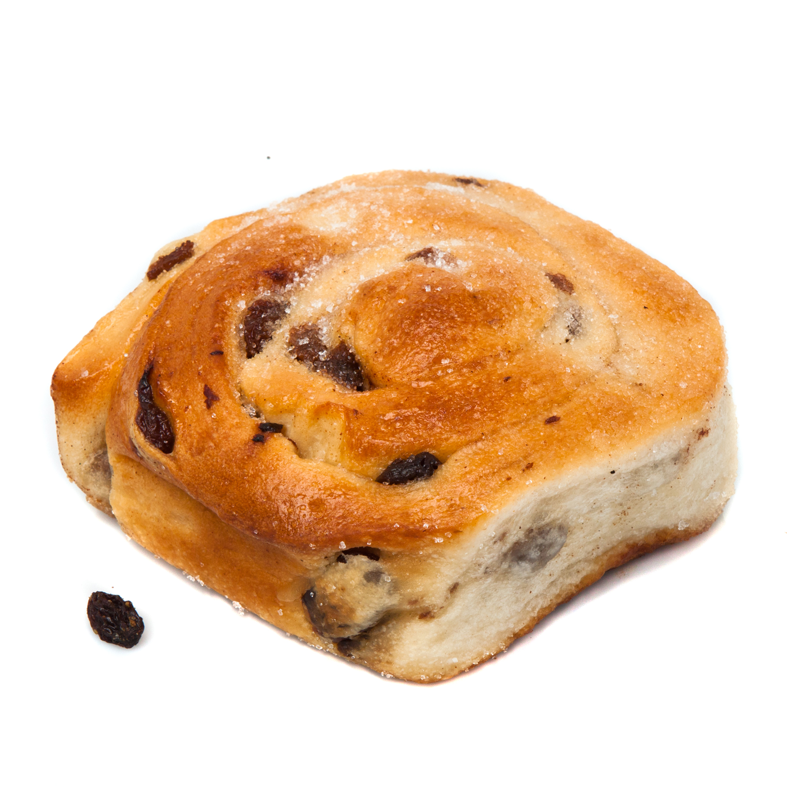

Chelsea Buns

Recipe Description
Ingredients
- 2 (.25 ounce) envelopes active dry yeast
- 1 teaspoon white sugar
- ¼ cup warm water
- 6 cups all-purpose flour
- 1 teaspoon salt
- ¾ cup butter
- 1 ½ cups milk
- ¾ cup white sugar, divided
- 3 eggs, beaten
- ¼ cup butter, melted
- 1 cup raisins
- 1 egg yolk
- 2 tablespoons water
Steps
- Sprinkle the yeast over 1/4 cup of warm water in a small bowl and stir in 1 teaspoon of sugar. The water should be no more than 100 degrees F (40 degrees C). Let stand for 5 minutes until the yeast softens and begins to form a creamy foam.
- Sift together the flour and salt. Cut in 3/4 cup butter with a knife or pastry blender until the mixture resembles coarse crumbs. Bring the milk to a boil; remove from the heat and stir in 1/2 cup sugar. Cool until the milk is lukewarm, no more than 100 degrees F (40 degrees C). Pour the milk and yeast mixture into the flour. Add the eggs and mix well to form a soft, sticky dough.
- Turn the dough out onto a well-floured surface and knead until smooth and elastic, about 8 minutes. Add more flour a tablespoon at a time, if necessary. Place the dough in a buttered bowl, turning to coat the dough. Cover with a light cloth and let rise in a warm place (80 to 95 degrees F (27 to 35 degrees C)) until doubled in volume, about 1 1/2 hours.
- Roll the dough into a square on a floured surface. Brush the dough with the melted butter and sprinkle with the remaining 1/4 cup sugar and the raisins. Roll up the dough to form a log, pinching the seam to seal.
- Preheat an oven to 375 degrees F (190 degrees C). Grease a 9x13-inch baking pan.
- Cut the log into slices about 1 1/2 inches thick. Place the slices in the prepared pan and let them rise for 30 minutes. Beat the egg yolk with 2 tablespoons of water to form an egg wash. Brush the buns with egg wash.
- Bake in the preheated oven until the buns are golden brown and the centers are set, about 25 minutes.